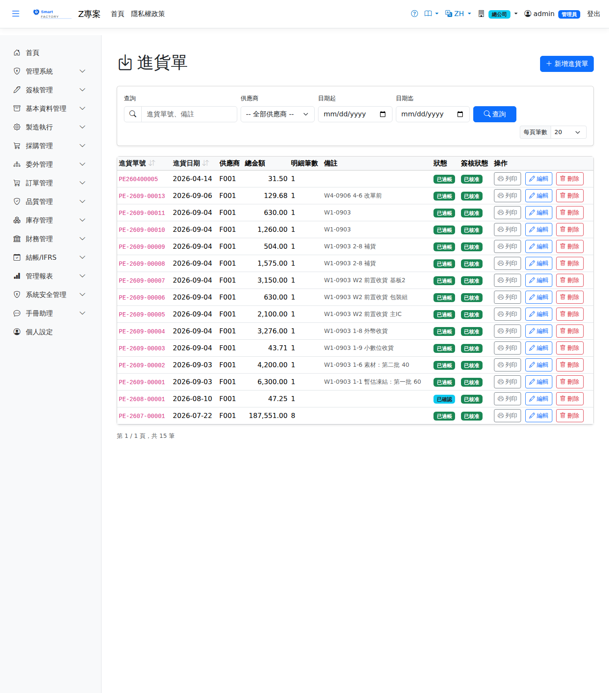

進貨單Goods Receipt
依採購單收貨：建立進貨單帶出未收量，確認後由倉庫作業入庫過帳（IN），需 IQC 的品號會觸發進料檢驗，合格才入良品倉。進貨確認後自動產生應付發票（含稅）。Receiving against a purchase order: a goods receipt brings in the open quantity, and once confirmed the warehouse posts it into stock (IN). Products requiring IQC trigger incoming inspection and only pass into the good-stock warehouse once approved. Confirming the receipt creates the AP invoice (tax inclusive) automatically.

查詢Search
單據狀態Status
| 狀態Status | 說明Guide |
|---|---|
| 草稿 DraftDraft | 已建立未生效，可自由編輯、刪除；需簽核者於此狀態送審。Created but not yet effective; can be freely edited or deleted, and submitted for approval from this status. |
| 待審核Pending approval | 已送審等待簽核，不可編輯；可撤回改回草稿。Submitted and waiting for approval; it cannot be edited, but it can be withdrawn back to draft. |
| 已確認 ConfirmedConfirmed | 簽核核准（或免簽核直接確認）後生效，等待後續作業/過帳。Effective once approved (or confirmed directly when no approval is required), waiting for the next step or for posting. |
| 已過帳 PostedPosted | 庫存/帳務已入帳，單據不可再修改。Stock and accounting have been posted; the document can no longer be changed. |
| 已作廢 VoidVoid | 反向沖銷已過帳內容；作廢原因需留存，不可復原。Reverses what was posted; the void reason is kept and the action cannot be undone. |
作業流程Process
收貨Receipt
欄位說明Field reference
表頭Header
| 欄位Field | 說明Guide |
|---|---|
| 進貨單號GR No. | 系統採番，不可修改Numbered by the system; not editable |
| 進貨日期Receipt Date | 必填Required 實際收料日；決定庫存異動與應付認列的期間Actual receipt date; it determines the period of the stock movement and the AP accrual |
| 供應商Supplier | 必填Required 交貨的供應商Delivering supplier |
| 來源單別 / 來源單號Source doc type / Source doc No | 本次進貨依據的來源單據（採購單等）；選定後可用「匯入」帶出未到齊的明細Source document of this receipt (a purchase order, for example); once chosen, "Import" pulls in the lines that are still open |
| 備註Notes | 整張進貨單的補充說明Notes for the whole goods receipt |
明細Lines
| 欄位Field | 說明Guide |
|---|---|
| 序號Seq | 明細行序Line seq |
| 採購參考PO Ref | 該行對應的採購單與行號，進貨後回寫該採購行的已到量Purchase order and line this row belongs to; the received quantity is written back to that order line |
| 品號Item | 必填Required 收到的料件Item received |
| 進貨數量 / 單位Receipt Qty / UOM | 必填Required 本次收料數量；不可大於該採購行的待處理數量。選了品號後，單位只列該品號可用的單位（庫存單位與查得到換算的單位，預設採購單位）。Quantity received this time; it cannot exceed the open quantity of the order line. Once a product is chosen, the unit list shows only the units usable for it (its stock unit and units that convert to it; purchase unit preselected). |
| 幣別Currency | 該行的交易幣別；本幣金額依單據匯率換算而得Transaction currency of the line; the local amount is converted with the document rate |
| 單價Unit Price | 交易幣別的未稅單價，小數位數依幣別設定Price before tax in the transaction currency; decimal places follow the currency setting |
| 稅別Tax | 稅別代碼，決定稅率；改稅別會重算稅額Tax code, which determines the rate; changing it recalculates the tax |
| 未稅金額Line Amt | 數量 × 單價Quantity × unit price |
| 稅額Tax | 未稅金額 × 稅率Amount before tax × tax rate |
| 含稅總額Total | 未稅金額 ＋ 稅額，仍為Amount before tax + tax, still in 交易幣別Currency |
| 本幣金額Local Amount | 含稅總額換算為本位幣的金額（本幣＝外幣 × 匯率）；表頭合計與帳務入帳一律採本幣The tax-inclusive total converted to local currency (local = foreign × rate); header totals and accounting entries always use local currency |
收料先入待驗倉，經 IQC 放行（或產品設為免驗）後才進正常倉；貨進正常倉時逐次累加認列應付帳款。Received material goes into the quarantine warehouse first and only moves to a normal warehouse once IQC releases it (or the product is exempt from inspection); the AP is accrued incrementally as the goods enter the normal warehouse.
相關畫面Related screens
採購單Purchase Order、進貨退出Goods Return、應付帳款AP Invoice、倉庫作業Warehouse Operations